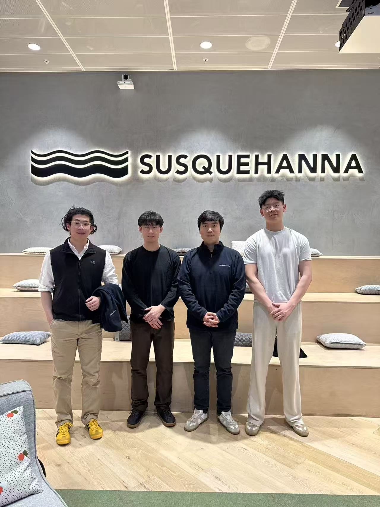

Causal by construction
Every signal at decision time uses only the visible price prefix, with execution, costs, and position limits matched to the evaluator.
We built a causal, price-only trading system that combined weak views of relative price movement—and became most useful when we learned what complexity to throw away.

From left: Andrew Wang (team captain) · Peidong (Isaac) Liu · Yiping Yin · Lingjie (Jackson) Zhong
Every signal at decision time uses only the visible price prefix, with execution, costs, and position limits matched to the evaluator.
Sparse lead-lag, residual reversal, low-rank propagation, and conservative pair counterfactuals contribute complementary views.
The final layer deliberately compresses the research into sign-only, full-limit positions rather than fragile confidence sizing.